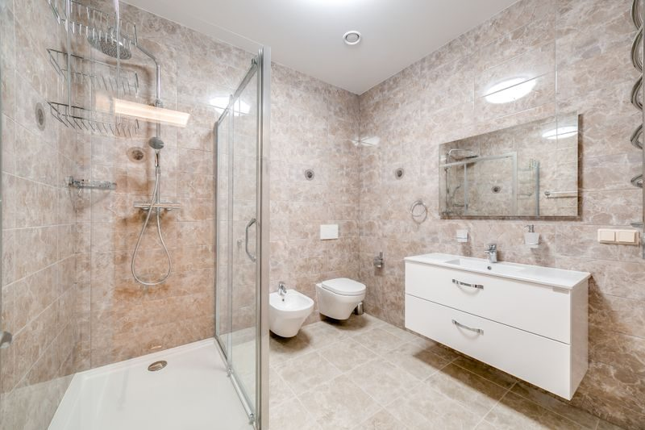
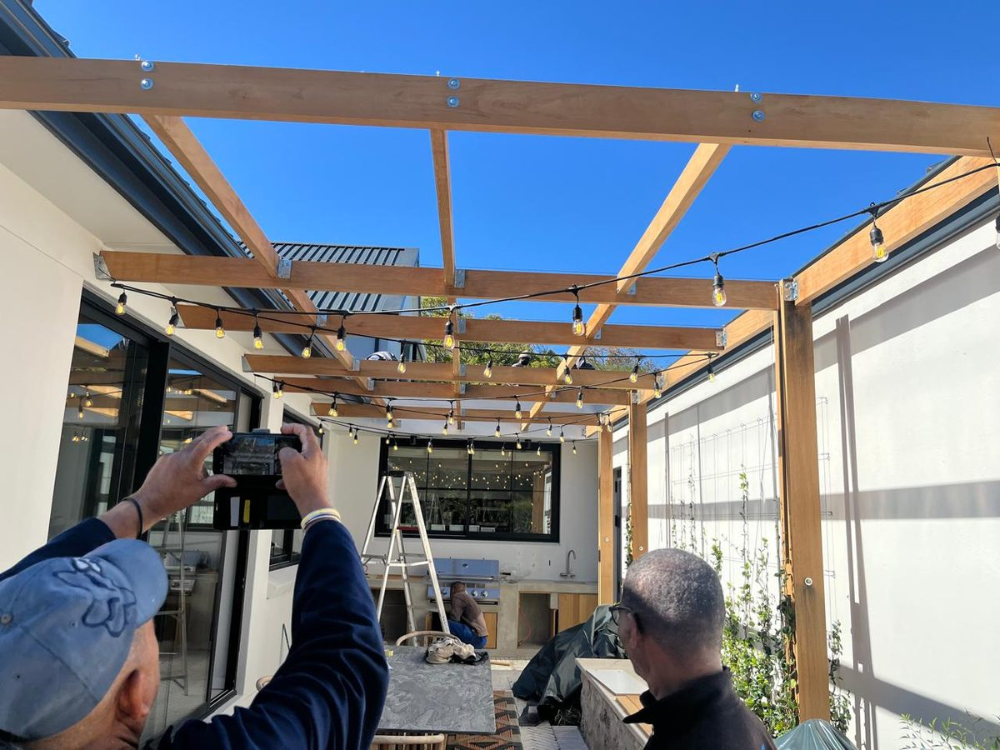
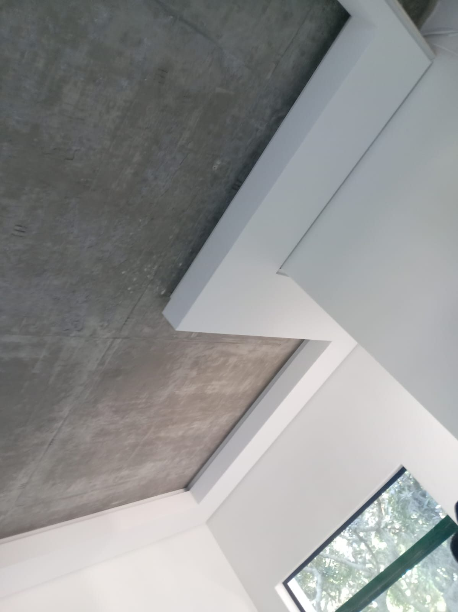

Bathroom renovations, Cape Town
A bathroom is a waterproofing job with tiles on top. If the layer under the tiles is wrong, the finish does not matter.
Most failed bathrooms in Cape Town fail the same way. Water gets behind the tiles, sits on the slab or in the wall, and finds the ceiling of the room below. By the time the paint blisters downstairs, the damage has been happening for months. Retiling over a failed waterproofing membrane is the single most common way owners spend money twice.
So the sequence we insist on is: strip the room back to the structure, repair whatever the water has damaged, fall the floor to the drain, waterproof the floor and the wet walls, flood test it, and only then tile. The flood test is not optional for us. Filling the floor with water and leaving it there tells you whether the membrane is sound before it disappears under tile.
We also look at the things that make a bathroom work after the photos are taken: where the water goes when the shower is running, whether the extractor actually vents outside, whether the door clears the new floor level, and whether there is somewhere to put a towel that is not the back of a chair.

From strip-out to the last silicone bead, including the waterproofing and the services that usually need moving.
Tiles, screed and sanitaryware removed, and any rotten timber or damaged plasterboard replaced.
Membrane to the floor and wet walls, upstands at every junction, tested with standing water before tiling.
Screed falls to the outlet, shower recesses formed properly, and no ponding where the floor meets the wall.
Floor and wall tiling with the layout set out from the room's centre lines rather than a corner.
Geyser, mixer and waste positions adjusted, then taps, toilet, basin and shower installed and tested.
Extraction ducted to outside, silicone, trims, mirrors and fittings, then the snag list.
| Scope | Typical Cape Town market range (2026) |
|---|---|
| Refresh: retile, new sanitaryware, same layout and waterproofing sound | R25 000 to R45 000 |
| Full renovation: strip to structure, new waterproofing, tiling, plumbing and fittings | R45 000 to R80 000 |
| Layout change: walls moved, shower enlarged, plumbing relocated, new window or door | R80 000 to R150 000 |
These bands reflect ranges published by Cape Town bathroom contractors in 2026. They are market context, not a quote from Plinth. Your written estimate follows a site visit and states exactly what is included.

Standing water on the membrane for a day, photographed, before anything covers it.
Formed to the outlet with a proper recess, so you are not squeegeeing the floor after every shower.
Extractors ducted to the exterior, not into the ceiling void where the moisture just moves.
Rotten timber and failed plumbing are priced as a separate, agreed item rather than a surprise invoice.
Get a written bathroom estimate that shows the waterproofing as a line item, not a hidden cost.
Free — no obligations
Room measured, fittings chosen, waterproofing system and tile layout agreed in writing.
Water isolated, room stripped to the structure, existing damage assessed and priced if it changes the scope.
Plumbing and electrical moved, screed falls formed to the outlet, substrate prepared and primed.
Membrane applied with upstands at every junction, then flood tested and photographed before tiling.
Tiling, sanitaryware, glass and finishes, then a walk-through with you and a written snag list.